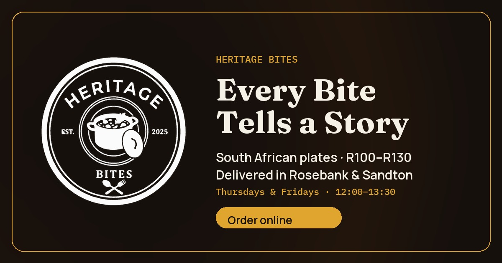
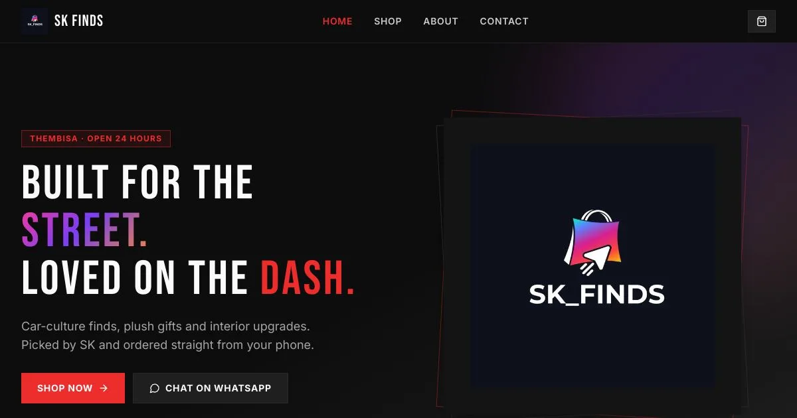
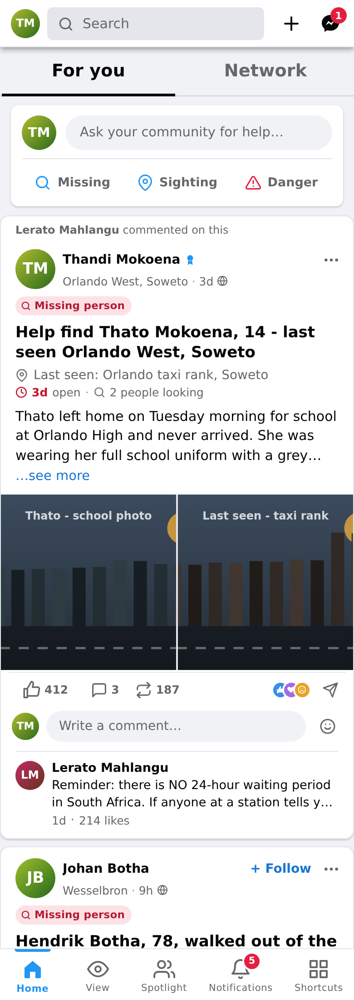

Nerdma · 2023
Website redesign and product dashboards that connect Nerdma’s governance, risk and sustainability offer.
For You is showing the default LulaZel Hub view.
LulaZel Hub / Portfolio
Website redesign and product dashboards that connect Nerdma’s governance, risk and sustainability offer.

LulaZel Hub website with search foundations and CRM-connected enquiries.

Website design, responsive build and CMS handover for SnB Chartered Accountants & Auditors.

An ordering PWA designed around a local kitchen, a clear menu and an easier path to reorder.

An in-progress online ordering website for South African home-style food. This is a testing link, not a finished launch.

Restaurant website and PWA for Africa Cuisine in Braamfontein.

A WhatsApp storefront for car accessories and plush toys in Thembisa.

Missing-person posters, sightings, danger alerts, surname communities, stories and private chat in one installable app.